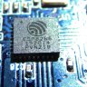

1. Статьи от esp8266.ru (к содержанию)
Arduino IDE для ESP8266
Русский перевод всех AT команд v0.22 ESP8266 SDK v1.0.0
ESP8266 IoT SDK v1.0.0 AT v0.22
ESP8266 – обновление прошивки с помощью XTCOM_UTIL
ESP8266 – подключение и обновление прошивки
ESPlorer – IDE для ESP8266
ESP8266 NodeMCU набирает обороты
ESP8266 + MicroPython
ESP8266 – встречайте FreeRTOS
Грязный хак модуля ESP8266 ESP-01 – дополнительно 4 GPIO
ESP8266 и прошивка NodeMcu
Как изменить номер виртуального COM порта
ESP8266 GPIO – описание регистров и пинов
ESP8266EX Распиновка (pinouts) чипа
ESP8266 Формат данных прошивки, протокол обмена
Конфигурирование ESP8266 с помощью AppStack ESP8266 Config
Распиновка ESP8266, различные модификации модулей на базе ESP8266
Загрузить файлы документации, datasheet, прошивки, утилиты
Последнее редактирование модератором: 5 Апр 2015
JustACat
Moderator
Команда форума
2. Полезные разделы на форуме esp8266.ru (к содержанию)
2.1 Различные проекты уважаемых пользователей нашего форума:
Обсуждение Unofficial Development Kit for Espressif ESP8266 {Си/Си++}
http://esp8266.ru/forum/threads/obsuzhdenie-unofficial-development-kit-for-espressif-esp8266.32/
Резюме:
Unofficial Development Kit for Espressif ESP8266 - это неофициального комплекта для разработки прошивок под SoC Espressif ESP8266.
В состав комплекта входят следующие компоненты и инструменты:
- Неофициальный компилятор GCC для SoC Xtensa LX106
- Официальный Espressif ESP8266 SDK
- Набор документации на SoC ESP8266
- Большой набор примеров прошивок в исходных кодах на языке Си
- Набор вспомогательных утилит для работы с платами на основе ESP8266
Авторство: CHERTS
Разработка ‘библиотеки’ малого webсервера на esp8266 {Си/Си++}
http://esp8266.ru/forum/threads/razrabotka-biblioteki-malogo-webservera-na-esp8266.56/
Резюме:
Тестовая прошивка на Си с множеством примеров работы с различными аспектами ESP.
Основные цели данной "свалки":
1) Управление конфигурацией WiFi модуля и приложений на ESP8266 с помощью любого устройства с интернет браузером не ниже версии HTTP/1.0.
2) Предусмотреть возможность подключения программных модулей для работы с разной периферией.
3) Использование минимальных затрат web сервером памяти (у ESP8266 heap менее 40 кбайт на всё при наличии SDK) в ESP8266.
Авторство: pvvx
Прошивка TCP2UART переходника с настройкой по Web {Си/Си++}
http://esp8266.ru/forum/threads/proshivka-tcp2uart-perexodnika-s-nastrojkoj-po-web.146/
Резюме:
Частный случай использования ESP8266 в качестве TCP2UART моста (прошивка на Си).
Авторство: pvvx
Sming Open Source Framework для нативной разработки прошивок ESP8266 {Си/Си++} {Arduino}
http://esp8266.ru/forum/threads/smi...ja-nativnoj-razrabotki-proshivok-esp8266.167/
Резюме:
Sming это фрамеворк для быстрой и удобной разработки своих прошивок под ESP8266 с использованием Arduino стиля управления GPIO, удобным встроенным инструментарием и возможностью подключения практически любых Arduino-совместимых библиотек.
Авторство: anakod
Общие вопросы по Arduino IDE для ESP8266 {Си/Си++} {Arduino}
http://esp8266.ru/forum/threads/obschie-voprosy-po-arduino-ide-dlja-esp8266.224/
А так же перевод описания на нашем сайте от Victor: http://esp8266.ru/arduino-ide-esp8266/
Резюме:
Arduino IDE для ESP8266 позволяет писать скетчи и загружать их одним кликом в ESP8266 в знакомой многим среде Arduino IDE. Проект постепенно развивается: как сама среда, так и набор портированных/разработанных с нуля библиотек.
Авторство: igrr
SCITE и ESP {LUA}
http://esp8266.ru/forum/threads/scite-i-esp.145/
Резюме:
Существует мощный редактор текста SCITE, который написан на луа, поддерживает подсветку множества языков, позволяет добавлять кнопки и скрипты. Редактор хорошо поддерживается и имеет длительную историю развития. Идея: добавить к SCITE связку c ESP и писать и отлаживать программы в этом редакторе.
Авторство: nikolz
2.2 Другая полезная информация и обсуждения:
Gpio и разные режимы [вредные советы]
http://esp8266.ru/forum/threads/gpio-i-raznye-rezhimy-vrednye-sovety.37/
Резюме:
Обсуждение правильного и неправильного подключение ESP к внешнему миру и внешнего мира к ESP. Железные вопросы.
Расширение флеш-памяти
http://esp8266.ru/forum/threads/rasshirenie-flesh-pamjati.36/
Резюме:
Обсуждение расширения набортной флеш-памяти (обычно 512 килобайт) вплоть до 16 мегабайт.
EaglePCB Library
http://esp8266.ru/forum/threads/eaglepcb-library-esp8266-esp12.121/
Резюме:
Пара библиотек для использования ESP в Eagle.
Esp8266 описание at команд, ссылки на at прошивки {AT}
http://esp8266.ru/forum/threads/esp8266-opisanie-at-komand-ssylki-na-at-proshivki.116/
Резюме:
Ссылки на актуальные версии AT прошивок и описание AT команд (на русском).
Arduino библиотеки esp8266 {Arduino}
http://esp8266.ru/forum/threads/arduino-biblioteki-esp8266.1/
Резюме:
Ссылки на различные Arduino библиотеки для работы с ESP.
Прошивка esp8266 посредством arduino uno {Arduino}
http://esp8266.ru/forum/threads/proshivka-esp8266-posredstvom-arduino-uno.77/
Резюме:
Использование Arduino для прошивки ESP (если нет USB-UART переходника).
Продолжение...
Последнее редактирование: 5 Апр 2015
JustACat
Moderator
Команда форума
3.1. Статьи на сторонних ресурсах (к содержанию)
WiFi модуль ESP8266 ESP07 для домашней автоматизации {старт} {AT} {LUA}
http://mysku.ru/blog/ebay/30626.html
Резюме:
- про ESP-07 и ESP-12
- покупка
- обзоры модулей
- много фото
- подключение (схема) и первый старт
- пайка модуля на стандартную макетку с шагом 2,54 (фото)
- прошивка через XTCOM_UTIL прошивки NodeMCU
- работа на Lua с модулем bmp180
Модуль Wifi на базе чипа ESP8266 {старт} {AT} {LUA}
http://mysku.ru/blog/aliexpress/29741.html
Резюме:
- про ESP-01
- покупка и краткий обзор модуля
- подключение (схема) и первый старт
- хак для добавления GPIO
- прошивка через XTCOM_UTIL прошивки NodeMCU
- проба пера на NodeMCU
- работа на Lua с модулем DHT11
- проба HTTP сервера на Lua
Ещё один Wi-Fi выключатель {старт} {LUA}
http://geektimes.ru/post/242366/
Резюме:
- реализация полноценного Wi-Fi выключателя
- схематика (есть фото устройства)
- код на LUA (есть пример HTTP сервера)
Бесплатная отправка SMS из Arduino без GSM модуля {AT} {Arduino}
http://habrahabr.ru/post/245805/
Резюме:
- использование ESP-01 (AT прошивке) для отправки SMS из Arduino
- есть краткая информация по подключению
- есть код для Arduino Mega 2560, увы, без комментариев, но он не сложный
Новогодняя звезда с Wi-Fi на базе ESP8266 {старт} {Си/Си++}
http://habrahabr.ru/post/249643/
Резюме:
- ESP-01
- управление пиксельной гирляндой на LPD6803
- описано подключение и использованные компоненты (есть фото и видео работы)
- написание собственной прошивки на Си (код доступен на гитхабе)
- управление осуществляется с Android приложения на телефоне (код, увы, недоступен)
Wi-Fi термометр на ESP8266 + DS18B20 всего за 4$ {старт} {LUA}
http://habrahabr.ru/post/252481/
Резюме:
- ESP-03
- подключение (есть схематика)
- прошивка NodeMCU с помощью NodeMCU Flasher
- работа с DS18B20
- отправка данных на thingspeak
Цикл статей от Sleuthhound (aka CHERTS, создатель и мейнтейнер Unofficial Development Kit)
Работа с ESP8266: Первоначальная настройка, обновление прошивки, связь по Wi-Fi, отправка-получение данных на ПК {старт} {AT}
http://geektimes.ru/post/241054/
Резюме:
- описание ESP-01
- подключение
- тест работы AT прошивки через терминал на ПК
- обновление AT прошивки
- настройка подключения к Wi-Fi на AT прошивке
- настройка режима TCP-сервер на AT прошивке
- настройка режима TCP-клиента на AT прошивке
Работа с ESP8266: Собираем компилятор и пишем первую прошивку {Си/Си++}
http://geektimes.ru/post/241842/
Резюме:
- компилятор и прошивка на Си/Си++
- сборка компилятора под Ubuntu Linux
- установка компилятора под Windows (Unofficial Developer Kit)
- подключение примеров проектов в среде Eclipse
- создание нового проекта в среде Eclipse
- написание простейших прошивок (довольно обширный пример работы с GPIO, WiFi, UART и т.д. на Си)
Работа с ESP8266: Пишем прошивку для управления системой nooLite {Си/Си++}
http://geektimes.ru/post/242669/
Резюме:
- своя прошивка на Си/Си++ (довольно обширный пример написания прошивки для ESP на Си, рассматривается множество аспектов)
Очень короткое знакомство с WiFi модулем ESP8266 ESP-03 {старт} {AT} {Arduino}
http://we.easyelectronics.ru/part/ochen-korotkoe-znakomstvo-s-wifi-modulem-esp8266-esp-03.html
Резюме:
- ESP-03
- схематика и подключение (есть печатка)
- грабли и траблы: AT + Arduino
- есть полезное в комментариях
Web Термометр на WIFI esp8266 c отсылкой на e-mail (от батарейки) {LUA}
http://we.easyelectronics.ru/smarth...sp8266-c-otsylkoy-na-e-mail-ot-batareyki.html
Есть не совсем копия у нас на форуме: http://esp8266.ru/forum/threads/web-termometr-na-esp8266-s-otsylkoj-na-e-mail-ot-batarejki-3v.71/
И тут, и там можно найти что-то интересное.
Еще есть тема продолжение про батарейное питание: "Как оптимально, с точки зрения продолжительности работы, запитывать модуль от батареек?"
Резюме:
- работа на LUA с DS18b20
- отправка на LUA данных на свой скрипт в сети
- работа от батареек (потребление и все, что с ним связано)
WIFI Модуль ESP8266 за 3,5 $ первые впечатления. + мост UDP<-->UART на LUA {LUA}
http://we.easyelectronics.ru/electr...ervye-vpechatleniya-most-udp-uart-na-lua.html
Резюме:
- работа на LUA с DS18b20
- UDP сервер на LUA
- UDP<-->UART мост на LUA
- работа с приложением под Android (доступно apk приложение)
ESP8266 NodeMCU {старт} {LUA}
http://kirill1985.ru/pokupka/3318-esp8266-nodemcu.html
Для тех, кто впервые взял в руки модуль и делает свой первый быстрый старт без Arduino. С блога kirill1985.ru, участника нашего форума Кирилл'а.
Резюме:
- про ESP-01 и ESP-07
- подключение (схема) и первый старт
- прошивка через NodeMCU Flasher прошивки NodeMCU
- проба пера на NodeMCU
- работа на Lua с GPIO
- WatchDog
Сверхдешевый WI-FI модуль ESP8266 и Беспроводной датчик на базе ESP8266 с отправкой данных на удаленные сервера {старт}
http://homes-smart.ru/index.php/oborudovanie/bez-provodov-wi-fi/sverkhdeshevyj-wi-fi-modul-esp8266
http://homes-smart.ru/index.php/obo...chik-na-baze-esp8266-dlya-servisa-narodmon-ru
По данным ссылкам вы можете найти уже готовую прошивку, заточенную под работу с несколькими датчиками. В основном, сбор данных и отправка на различные сервисы.
В данный момент прошивка поддерживает чтение датчиков DHT11/22, BMP085/180, BH1750, DS18B20, AM2321 и другие и умеет передавать показания на сайт narodmon.ru, на сервис учета метрик ThingSpeak.com, а так-же в систему умного дома MajorDoMo. Имеется возможность управлять состоянием свободных GPIO для управления нагрузками(реле).
Резюме:
- ESP-01
- общие сведения
- подключение (схема)
- прошивка
- описание представленной прошивки и работы с ней
Погодная станция на основе Arduino и Wi-Fi модуля ESP8266 {старт} {AT} {Arduino}
http://digitrode.ru/computing-devic...a-osnove-arduino-i-wi-fi-modulya-esp8266.html
Погодная станция без датчиков. Погода берется с интернета и выводится на экран.
Резюме:
- ESP-01 (WI07c)
- TFT-дисплей
- подключение (схема)
- простой пример кода под Arduino
Множество простых и не очень примеров по ESP8266 {старт} {AT} {Arduino} {LUA} {ENG}
http://www.instructables.com/howto/esp8266/
Резюме:
- разные виды ESP
- куча схем и примеров устройств
- с Arduino и без
- на разных языках программирования
- один минус - все на английском (хотя попадаются и на других языках)
Возвращаем к жизни esp8266 после неудачного обновления
https://darkbyte.ru/2015/78/esp8266-debrick-after-ciupdate-fatal-exception/
Резюме:
- ESP-05
- возвращение к жизни после неудачной прошивки
- GPIO0 на ESP-05 уже замкнут на VCC
- придется паять
Спасибо: @Victor'у
Последнее редактирование: 10 Апр 2015
JustACat
Moderator
Команда форума
3.2. Статьи на сторонних ресурсах продолжение (к содержанию)
Цикл статей Reverse Engineering ESP8266 на хабре
Часть 1: http://habrahabr.ru/post/255135/
Часть 2: http://habrahabr.ru/post/255153/
... возможно, будет продолжение ...
Резюме:
- Кратко описана архитектура esp8266, работа с памятью.
- Подробно описан процесс дизассемблирования прошивок.
- Интерес так же представляют комментарии к статьям.
- Но стоит иметь ввиду: имеются ошибки и неточности в описании сегментов, процесса загрузки.
- В общем, информация интересная, но на 100% принимать ее не стоит. Нужно проверять.
Спасибо: Andy Korg за ссылку и резюме, а так же pvvx за дополнительный анализ статьи.
Продолжение...
Последнее редактирование: 10 Апр 2015
JustACat
Moderator
Команда форума
4. Документация (к содержанию)
Что нужно изучить из документации Espressif:
- ESP8266_Specifications_v4.1.pdf
- ESP8266_Beginners_Guide_V0.4.1.pdf
- ESP8266_Module Application Design Guide.pdf
- SDK-Espressif IoT SDK Programming Guide_v1.0.0.pdf (берите обновленную версию от 20.03.15)
(или аналогичный, соответствующий той версии SDK, которую вы используете)Отдельно по AT прошивке:
- 4A-AT-Espressif AT Instruction Set_v0.22.pdf (берите обновленную версию от 20.03.15, спасибо shaman1010)
(или аналогичный, соответствующий той версии AT прошивки, которую вы используете)- 4B-AT-Espressif AT Command Examples_v0.4.pdf
(или аналогичный, соответствующий той версии AT прошивки, которую вы используете)Пожалуйста, изучите эти документы, если вы собираетесь использовать ESP. Их всего 6. Пусть даже в чем-то они могут повторять информацию, но с другой стороны в каждом из них можно отловить некоторые полезные мелочи.
Потратьте свое время на изучение, прежде, чем задавать одни и те же вопросы на форуме. Этим вы сэкономите время другим участникам сообщества, и они смогут потратить его, например, на улучшение прошивок, которыми, возможно, вы же и будете в последствии пользоваться. Спасибо за понимание!
Всю эту документацию, и еще много полезного (утилиты, прошивки, SDK и т.п.) всегда можно найти здесь.
NodeMCU:
- Сайт прошивки {ENG} {LUA}
http://nodemcu.com/index_en.html
Резюме: общее описание и несколько примеров LUA.
- Общие сведения, примеры использования {ENG} {LUA}
https://github.com/nodemcu/nodemcu-firmware#nodemcu
- API оригинал на английском {ENG} {LUA}
https://github.com/nodemcu/nodemcu-firmware/wiki/nodemcu_api_en
- API частичный перевод на русский {LUA}
https://github.com/nodemcu/nodemcu-firmware/wiki/nodemcu_api_ru (за перевод спасибо Victor'у)
Обязательно изучите эти странички, прежде, чем задавать вопросы по NodeMCU и/или Lua. Спасибо за понимание!
Arduino (на AT и не только):
- Тема "Пользует ли кто WiFi-модули ESP8266 ? Поделитесь впечатлениями." на arduino.ru {Arduino}
http://arduino.ru/forum/apparatnye-...wifi-moduli-esp8266-podelites-vpechatleniyami
Резюме: информации и граблей собрано много, но структурирована она, считайте, никак... И тем не менее для тех, кто решил именно при помощи Arduino покорять ESP - советую к прочтению. Есть и различная схематика, и фото/схемы готовых устройств и решений, и примеры кода, и отлов ошибок разного рода.
Продолжение...
Последнее редактирование: 10 Апр 2015
JustACat
Moderator
Команда форума
5. Прочие интересные статьи общего плана около тем: WiFi, умный дом, ESP и т.п. (к содержанию)
- Архитектура умного дома — с Black Swift и не только
http://habrahabr.ru/company/blackswift/blog/251837/
- WebSockets — полноценный асинхронный веб
http://habrahabr.ru/post/79038/
Очень советую к прочтению, особенно тем, кто общается с ESP (и не только) через браузер.
Вначале чтобы понять, что это такое вообще, из вики: https://ru.wikipedia.org/wiki/WebSocket
Продолжение...
Последнее редактирование: 10 Апр 2015
JustACat
Moderator
Команда форума
Зарезервировано...

Victor
Administrator
Команда форума
Многофункциональный датчик температуры/влажности на ESP8266 или еще один шаг к «интернету вещей»
Еще один проект на ESP8266 и счетчик воды
�